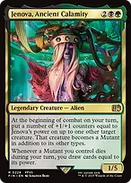
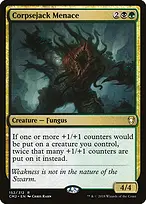
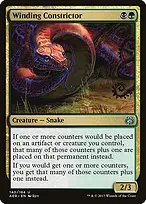
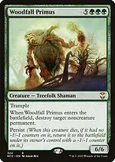

Expand all Collapse all Turn your creatures into colossal Mutants using Jenova's combat ability, draw massive hands when sacrificing them on your turn, amplify counters with Golgari doublers, and finish games with Jarad flings or persist loops. Mutant creation and death card draw Jenova, Ancient Calamityat the beginning of combat on your turn, put a number of +1/+1 counters equal to Jenova's power on up to one other target creature, turning it into a Mutant. Whenever a Mutant you control dies during your turn, you draw cards equal to its power. Because this draw triggers only on your turn, use instant-speed sacrifice outlets (Greater Good, Altars, Carrion Feeder) before your turn ends. Greater Goodsacrifice a creature to draw cards equal to its power, then discard three cards. When sacrificing a Mutant during your turn with Jenova on the battlefield, both Jenova and Greater Good trigger, drawing DOUBLE the creature's power in cards! Carrion Feederone-mana sacrifice outlet that cannot block, gaining a +1/+1 counter each time it consumes a creature. Viscera Seerone-mana sacrifice outlet that scrys one card on each sacrifice. Phyrexian Altarconverts sacrificed Mutants into colored mana to cast newly drawn cards. Ashnod's Altarconverts sacrificed creatures into two colorless mana. Skullclampequips for one mana to draw two cards upon creature death, stacking with Jenova's draw trigger. Counter doublers and amplifiers Branching Evolutiondoubles the number of +1/+1 counters put on creatures you control. With Jenova at four power, Branching Evolution places eight +1/+1 counters instead. Corpsejack Menacedoubles all +1/+1 counters placed on creatures you control. Hardened Scalesadds one additional +1/+1 counter whenever counters are placed on a creature you control. Winding Constrictoradds an additional counter of any kind whenever counters are placed on you or your permanents. Kami of Whispered Hopesadds an additional +1/+1 counter and taps for mana of any color equal to its power. The Ozolithcollects all counters from permanents that leave the battlefield at combat step and moves them onto target creature at combat, preventing counter loss upon sacrifice. Ozolith, the Shattered Spireincreases counters placed and can pay {1}{G} and tap to add +1/+1 counters. Finisher lines and persist loop (Turn 6+) Jarad, Golgari Lich Lordpays {1}{B}{G} and sacrifices a creature to force each opponent to lose life equal to the sacrificed creature's power. Sacrificing a 20-power Mutant with Jarad drains each opponent for twenty life directly, bypassing combat blockers entirely. Woodfall Primusenters and destroys target noncreature permanent. When it dies, persist returns it to the battlefield with a -1/-1 counter. Putting +1/+1 counters on Primus (via Jenova or The Ozolith) removes the -1/-1 counter due to state-based actions, allowing infinite persist sacrifice with an Altar to destroy all opposing noncreature permanents. Blood Artistdrains target player for one life and gains you one life whenever any creature dies. Tutors, interaction, and opening hands Demonic Tutorfinds Greater Good, Jarad, or a counter multiplier. Vampiric Tutorone-mana instant tutor placing any card on top of your library. Ancient Tombprovides two colorless mana for early acceleration. Deadly Rollickfree creature exile while controlling Jenova. Toxic Delugeclears wide opposing boards through indestructible. Culling Ritualdestroys all nonland permanents with mana value two or less and generates green and black mana for each destroyed permanent. Keep opening hands with two to three lands, early mana dorks (Birds of Paradise, Llanowar Elves, Delighted Halfling), and a sacrifice outlet or counter doubler. Cast Jenova on turn three or four, immediately target an existing creature to place four +1/+1 counters and turn it into a Mutant, and sacrifice it post-combat to draw four or more fresh cards. Close out games with Jarad or massive board swings on Turn 6 or later. House rules apply: infinite combo loops and compact wins are restricted to Turn 6 or later. Earlier turns focus on establishing board presence, counter accumulation, and card draw.